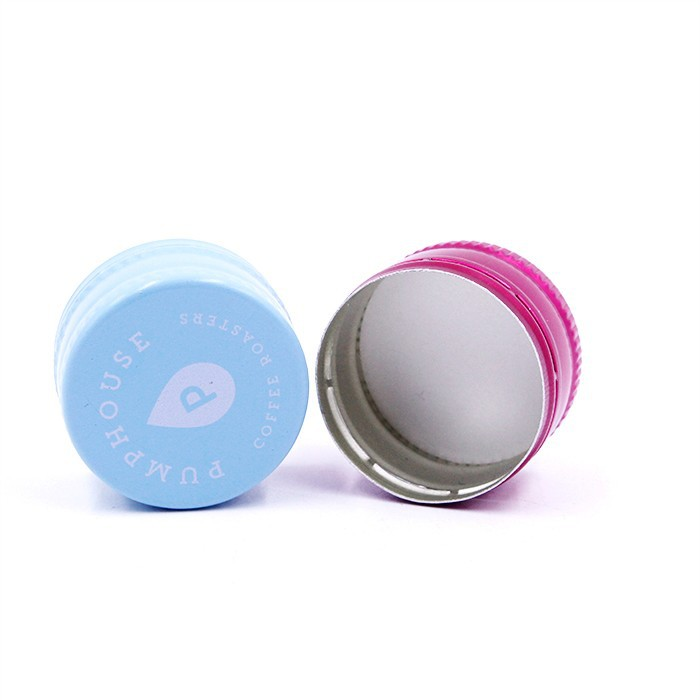
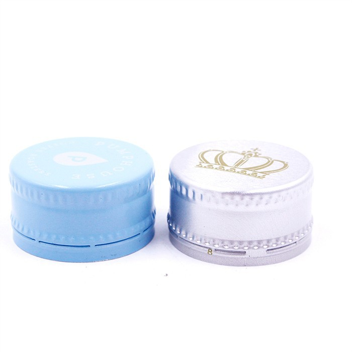

In the world of wine, the choice of closure is a topic that has sparked extensive debate among producers, connoisseurs, and consumers alike. Traditionally, cork has been the go - to option for sealing wine bottles, symbolizing elegance and a connection to centuries - old winemaking traditions. However, in recent decades, screw caps have emerged as a viable alternative, with claims of being able to keep wine fresh for a long time. As a supplier of screw caps for wine, I am well - positioned to explore this topic in depth and provide a scientific and practical perspective.


The Science Behind Wine Degradation and Preservation
Before delving into whether screw caps can keep wine fresh, it's essential to understand how wine degrades and what factors contribute to its preservation. Wine is a complex mixture of organic compounds, including alcohol, acids, sugars, phenolics, and aromatic compounds. Over time, these components can react with each other and with oxygen in the presence of heat and light, leading to changes in flavor, color, and aroma.
Oxygen is perhaps the most significant factor in wine degradation. When wine is exposed to oxygen, a series of oxidation reactions occur. For example, phenolic compounds in red wine can oxidize, causing the wine to lose its vibrant color and develop a more brownish hue. Oxidation can also lead to the formation of acetaldehyde, which gives wine a sherry - like flavor and aroma. Additionally, oxygen can promote the growth of spoilage microorganisms, such as acetic acid bacteria, which convert alcohol into acetic acid, resulting in a vinegary taste.
To preserve wine, winemakers aim to minimize its exposure to oxygen while still allowing a controlled amount of oxygen ingress for aging and development. This is where the choice of closure becomes crucial.
Traditional Cork Closures: The Pros and Cons
Cork has been used to seal wine bottles for centuries, and it has several advantages. Cork is a natural material that is impermeable to liquid but allows a very small amount of oxygen to pass through, which is beneficial for the aging of certain wines. This slow oxygen exchange can help red wines develop complex flavors and aromas over time, as phenolic compounds polymerize and mellow, resulting in a smoother and more rounded taste.
However, cork closures also have significant drawbacks. One of the most well - known issues is cork taint, which is caused by the presence of 2,4,6 - trichloroanisole (TCA). TCA is a chemical compound that can form when naturally occurring fungi in cork interact with disinfectants or chlorine - containing compounds. Cork - tainted wine has a musty, moldy odor and a flat, unbalanced flavor, and it is estimated that cork taint affects between 2% and 7% of all cork - sealed wines.
In addition to cork taint, cork closures can be inconsistent in terms of oxygen permeability. Variations in cork quality, thickness, and density can lead to differences in the amount of oxygen that enters the bottle, making it difficult for winemakers to predict how a wine will age.
Screw Caps: A Modern Alternative
Screw caps, also known as Stelvin closures, have gained popularity in recent years, especially for wines that are meant to be consumed young. Screw caps offer several advantages over traditional cork closures.
Firstly, screw caps provide an airtight seal, which effectively reduces the amount of oxygen that comes into contact with the wine. This is particularly beneficial for wines that are not intended for long - term aging, as it helps to preserve the wine's fresh fruit flavors, acidity, and aromas. With a screw cap, there is little to no risk of cork taint, ensuring that the consumer experiences the wine as the winemaker intended.
Secondly, screw caps are more consistent in terms of oxygen permeability. Unlike cork, which can vary widely in quality and oxygen - transmission rates, screw caps can be manufactured to precise specifications. This allows winemakers to have greater control over the aging process and ensures that each bottle of wine ages consistently.
Can Screw Caps Keep Wine Fresh for a Long Time?
The answer to whether screw caps can keep wine fresh for a long time depends on several factors, including the type of wine, the winemaking style, and the storage conditions.
For wines that are meant to be consumed within a few years of bottling, such as most white wines, rosés, and light - bodied red wines, screw caps are an excellent choice. The airtight seal provided by screw caps helps to preserve the wine's freshness, fruitiness, and acidity, allowing these wines to remain in optimal condition for an extended period. For example, a Sauvignon Blanc sealed with a screw cap can retain its crisp acidity and vibrant tropical fruit flavors for up to three to five years when stored properly in a cool, dark place.
However, for wines that are intended for long - term aging, such as full - bodied red wines with high tannin levels, the situation is more complex. While screw caps can prevent excessive oxidation, they may also limit the slow oxygen exchange that is necessary for the development of complex flavors and aromas in these wines. Some winemakers believe that a small amount of oxygen is essential for the polymerization of tannins, which softens the wine's structure and enhances its mouthfeel over time.
That being said, recent research has shown that some wines can age successfully under screw caps. By using modified screw caps with a controlled - oxygen permeation system, winemakers can achieve a similar oxygen - exchange rate to that of natural cork closures. These special screw caps allow a very small, precise amount of oxygen to enter the bottle, enabling the wine to age and develop in a more traditional manner.
Different Types of Screw Caps We Offer
As a supplier of screw caps for wine, we offer a wide range of products to meet the diverse needs of winemakers. Our Aluminium Water Screw Caps are made from high - quality aluminum, providing a secure and reliable seal. They are designed to be easy to use and are suitable for a variety of wine bottle types.
Our Aluminum Plastic Bottle Cap With Tear Line combines the durability of aluminum with the flexibility of plastic. The tear - line feature adds an extra level of security, making it ideal for premium wine brands that want to prevent counterfeiting and ensure the integrity of their product.
In addition, we also offer Pull Ring Easy Open Aluminum Crown Caps. These caps are not only convenient for consumers but also provide a tight seal to keep the wine fresh. They are a popular choice for some sparkling wines and light - bodied wines.
Contact Us for Your Screw Cap Needs
Whether you are a small - scale winery looking for an affordable and reliable closure solution or a large - scale producer seeking a high - end, customizable option, we have the expertise and products to meet your requirements. Our team of professionals is dedicated to providing excellent customer service and technical support. If you are interested in learning more about our screw caps for wine or would like to discuss your specific needs, please feel free to contact us. We look forward to the opportunity to work with you and help you preserve the quality and freshness of your wines.
References
- Jackson, R. S. (2008). Wine Science: Principles, Practices, Perceptions. Academic Press.
- Coombe, B. G., & Dry, P. R. (2006). Grapevine Molecular Physiology and Biotechnology. Springer.
- Waterhouse, A. L., Kennedy, J. A., & Ebeler, S. E. (2016). Handbook of Wine Chemistry. CRC Press.